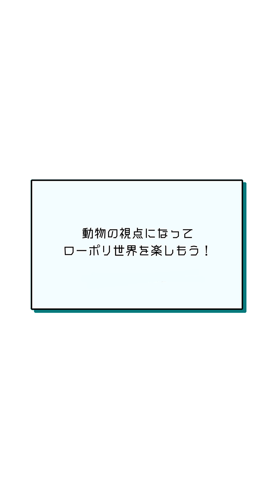

// 👆 クリックまたはコントローラー押下で音を再生
window.addEventListener("click", () => {
if (!natuPlayed) {
natuPlayed = true;
natuSound.components.sound.playSound();
console.log("🎵 natu.mp3 再生開始");
// ⏳ 90秒後に停止
setTimeout(() => {
natuSound.components.sound.stopSound();
console.log("⏹ natu.mp3 停止");
}, 90000);
}
});